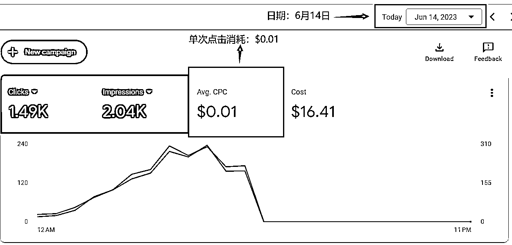
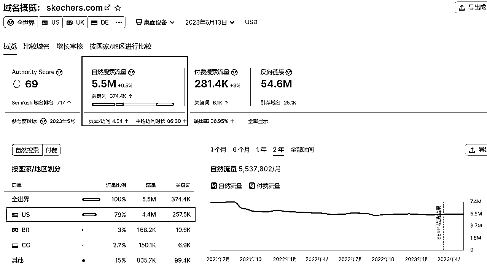
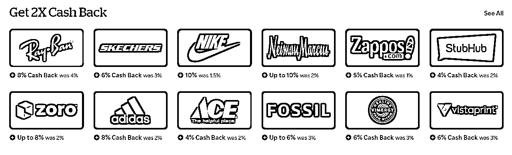
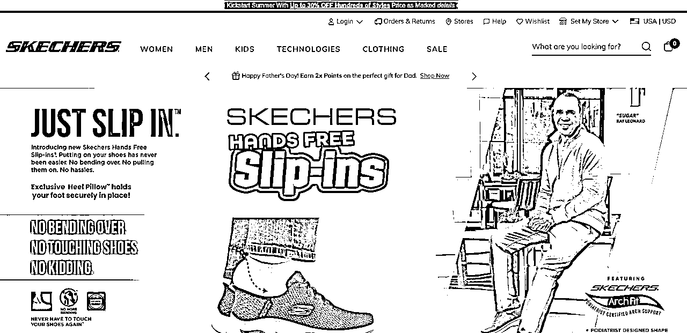
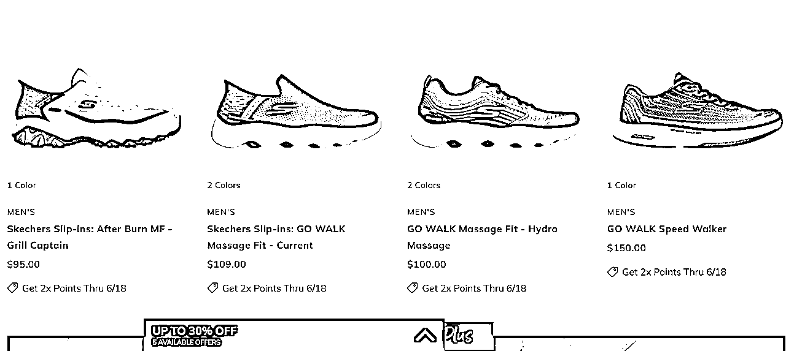
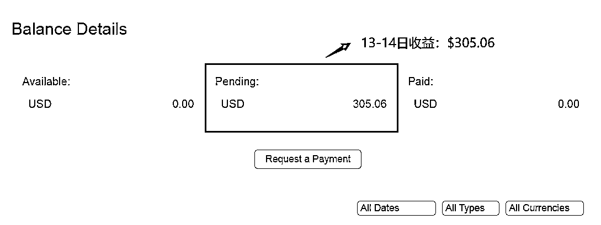
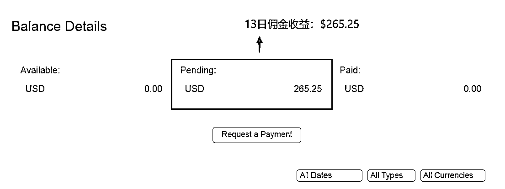
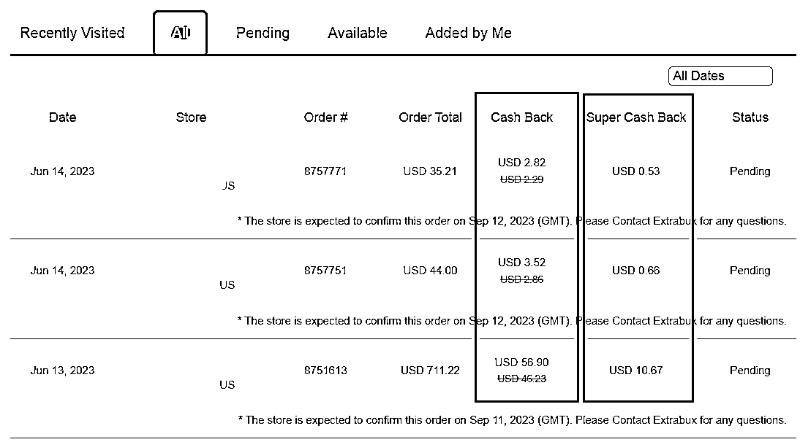
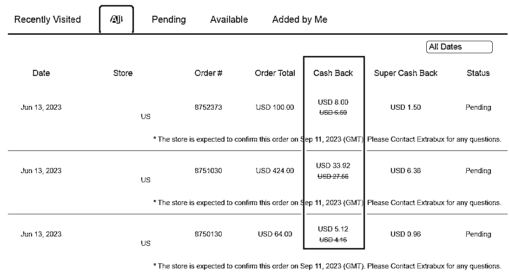

来源：https://viuejh8h99y.feishu.cn/docx/I8QLdxyXYoJWBOxaQSbczLY5nOc
在Google Cash这个行当摸爬滚打，也差不多有3个月左右的时间了。有人把这个行业，称为MediaBuy；有人把这个行业，称为Brand Bid，也有人把这个行业，概括地称为Affiliate Marketing。
平心而论，经历了口罩3年，有多少行业受到影响，又有多少做项目的大佬从高峰跌到谷底呢？前不久参加了一个线下的分享，台下坐着的，都是各个赛道搞项目的老板，而台上分享的，也是一位在互联网上有超过10年项目经验的大咖。
不知道大家有没有发现一个问题？最近无论是生财也好，还是别的圈子也好，线下聚会变得更加频繁了，大家有的正在做着手里的项目；有的正在寻找各种项目；有的人也在骑驴找马，不安于现状，给自己准备Plan B或者是Plan C。
其实，或多或少，大家都会有同感，无论平台怎么换、项目怎么换，其实闭环和底层逻辑都是相通的。那么：
就拿2022年来举例，我们的团队，辗转了很多个项目：国内的数字藏品、信用管理系统、美团外卖柜、芯片制造业、互联网医馆等等。一路走过来，跌跌撞撞，哪怕我们过去在互联网上做流量的能力很强，但是一直缺乏供应链，缺乏一个属于我们自己的好产品，又在口罩的大环境下，确实举步维艰。
所以，就从2022年年底开始，团队停下脚步，开始思考、开始发现更多机会。
接触Google Cash这个项目，也是身边一个很好的哥们儿，他做这一行差不多快10年了。过往很多年时间，我们算是在各自领域都小有成就。但是，疫情冲击之下，我们遇到很大挑战，他们的Google Cash却越做越好。所以，从2022年年底，到2023年年初，我们不断接触各种项目，也不断筛选各种项目，根据我们自己的特点，最终还是决定从0开始，在Google Cash这个项目上进行深耕。
有对比，就有伤害；有对比，才会有思考。最近一段时间，参加线下交流聚会，包括过往的2-3年时间，见证了许多做项目的朋友起起伏伏。有很多朋友发出了这样的感叹：当年淘宝、天猫做得好的时候，也是风生水起，后来转到京东、转到拼多多，再后面转到抖音、快手，现在又入局小红书，做了这么多年项目，换了这么多个坑位，赚过8位数、甚至接近9位数，但是最后都亏得一塌糊涂。
不断地换着项目、换着赛道，赚到钱没呢？赚到一些；
有没有沉淀呢？沉淀了一些；
但好像，又什么都没有留下。
或许，上面说的种种经历，都是做项目的很大部分朋友的共鸣吧。因为大家都是普通阶层，能赚钱，但是不太容易持续赚钱；能赚钱，但是不太容易守得住钱；能赚钱，但是不太容易让钱生钱。
大家前几年应该都接触过国内的社交电商，比如芬香、粉象日记、好省等等，通过推广各大平台的商品，赚取自己的佣金收益。但是国内的社交电商，持续时间并不长，大概原因有以下几个吧：
分享到这里，多分享几句。我是在2017年就开始做自媒体了，那时候还是以图文为主，在那之前做头条、做公众号、做百家号等等都是很赚钱，并且坚持下去能够赚得盆满钵满的。但是，互联网的世界里，不说“三十年河东三十年河西”了，可能三个月就会发生很大的变化。
这个原因，也正是我们想入局Google Cash的一个原因。因为国内目前很多赛道的项目，变化速度很快。就拿短视频平台来举例，各个平台都在分这个蛋糕，平台在变，规则在变，用户在变，流量也在变。所以很多人都需要每时每刻保持学习，不然就会被淘汰。——我们可以看到，有很多2021年、2020年的网红，最近已经看不到他们的身影了，除了内卷严重，还有一个原因就是变化太快。
这并不是说Google Cash也是一成不变。因为Google在变，规则也在变；平台在变，推广者也在变；
但是，我们也知道，其实老外相对于国内做项目的朋友，还是没有那么卷的，他们有时候发明一个什么东西，能用几十上百年，所以，他们的改变速度，也是相对来说慢一些的。
那么，接下来，简单讲一下Google Cash的赚钱逻辑吧。
这张图，是6月14日，Google Ads后台的一张截图。我们可以看到：（截图时）
总消耗-Cost：$16.41
单次点击消耗-CPC：$0.01
展示量-Impressions：2040次
点击数-Clicks：1490次

MediaBuy，字面意思翻译过来，就是【媒体购买】。简单来说，就是我们通过向Google购买精准流量，来实现变现。这里有一个前提：老外购物，通常也可以使用APP，但是仍然有很大一部分老外，会通过浏览器搜索（Google浏览器在外国使用率可以达到90%以上），来进行对应品牌的搜索，并且这部分用户，都是我们所说的“精准用户”，也就是通常来说，对某个品牌很感兴趣才会去搜索，有下单意愿的人。
比如，斯凯奇（Skechers）这个品牌，单月的搜索量，可以达到5.5M，M是百万的缩写，也就是550万的自然搜索，通过Google等浏览器。

那么，像Skechers这样的一个品牌，在很多返利网、网盟上面都有offer，比如在Rakuten的返利网上面。我们可以看到，目前Skechers的返利为“6% Cash Back”。

点击进去，就直达Skechers官网了。通常官网会有最新的活动信息，比如这个“Up to 30% OFF（30%折扣）”。

那么我们再看看，Skechers这个品牌通常价格是多少钱？
——通常均价：$100左右。

好的，接下来我们就来算算，大概的一个收益情况。
以上面1490次点击来粗略计算一下：
1490次精准点击，通常下单人数，我们就按照100个人来算，差不多15个人中有1个人下单；
他们下单的均价，按照$100一单来计算；
那么佣金收入为：100×100×6%=$600。
而我们的投入，不到$20，产出/投入 比超过了30。
通常来说，返利网的产出/投入大于10是正常。达到20、30甚至更高也时有出现。
相比于返利网，那么网盟的产出/投入会更高。
任何一个高回报的项目，不可能完全没有风险。那么Google Cash这个项目的风险在哪里呢？




上面的几张图，是这两天的一些收益，和一些订单明细。目前我差不多在这个行业中实操了2个月，每天的收入可以稳定在200美金以上。但是我的这一点点收益，相比于这个行业中的大佬们而言，确实是小巫见大巫。不过也还是有一点点经验可以分享：无论是返利网还是网盟，都需要做好合理的规划，无论是广告费的规划，还是账号的规划、offer的规划。有规划，遇到问题的时候才不会手足无措；有规划，才能够真正地运用好目前自己手中的资源，获取最大的收益，并且是可以成功拿到的。
任何一个项目，都有生命周期。虽然业内的一些大佬经常打趣说：只要Google的服务器不关闭，那这一行就可以一直赚钱，再做10年、20年没有问题。但是项目做多了，不太敢说得太绝对，只是有一些个人的看法，写在最后。